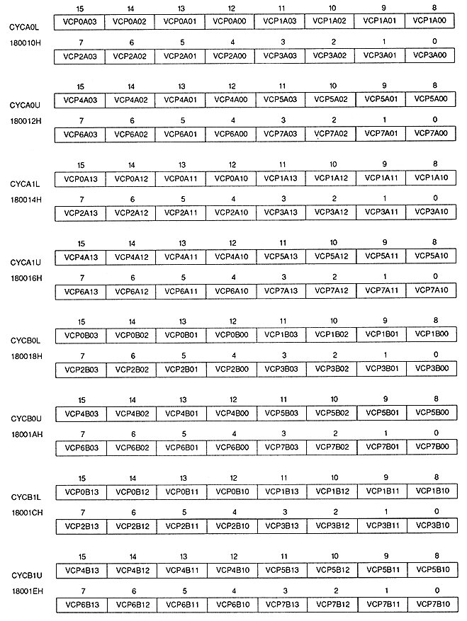

Return to previous page ｜ Return to menu ｜ Go to next page
-
■ VRAM cycle pattern register
- VRAM cycle pattern register controls VRAM access during the display period. This is a write-only 16-bit register located at addresses 180010H to 18001EH. The value is cleared to 0 after power-on or reset, so be sure to set it.

Return to previous page ｜ Return to menu ｜ Go to next page